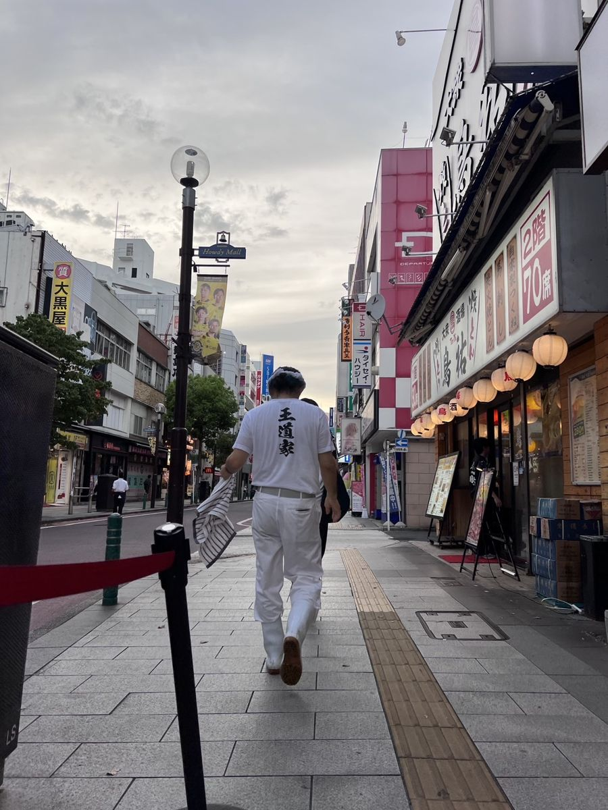
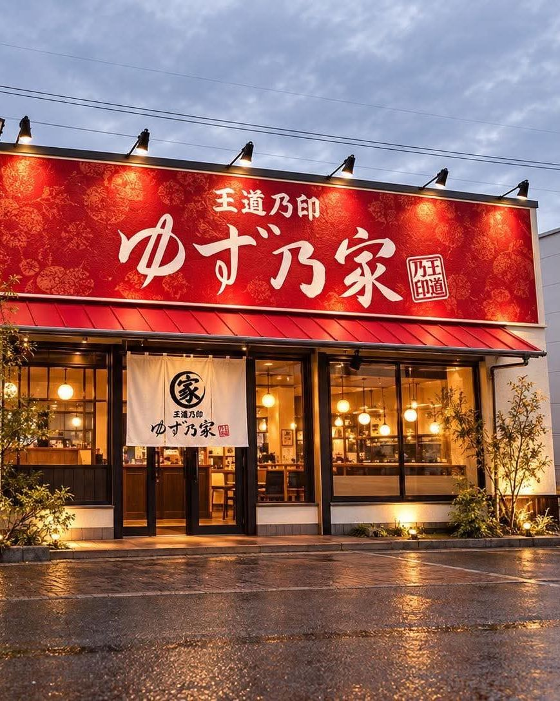
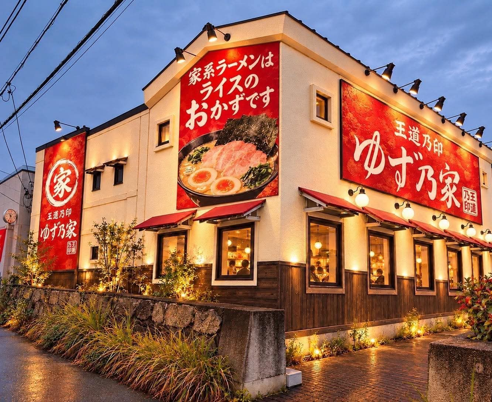

あなたの
お好みは？
家系ラーメンでおなじみの「麺・味・油」。好みがはっきりしている方ほど、作る側に向いているかもしれません。選んでみてください。
- 麺
- 味
- 油
ご注文：麺かため・味ふつう・油ふつう
そのこだわり、
こんどは作る側で。
※ゆず乃家のメニューや注文の仕方は、開店前にお知らせします。
開店に向けて、
厨房に立っています。
ゆず乃家のメンバーは、王道乃印の柏店の厨房に立ち、開店に向けた準備を進めています。この輪に、福山で一緒に加わってくれる方を探しています。


写真・動画は、開店準備の中で撮影したものです

福山市緑町に、
この店ができます。
赤い看板と、白い暖簾。2027年1〜2月の開店に向けて、ここで一緒に働く仲間を探しています。
完成イメージゆず乃家で働く、
6つの理由。
未経験から、本格家系の技術を。
王道家・清水社長が手掛ける「王道乃印」の一杯。仕込みから調理・接客まで、できることから少しずつ覚えられます。オープン前に研修を予定しています。店長候補は飲食店での勤務経験が必要です
全員が、同じスタートライン。
新しいお店なので、先輩・後輩の垣根なし。仲間と意見を出し合いながら、ゼロからお店をつくれます。
年間休日105日。
週休2日を基本としたシフト制。月8〜9日程度のお休みで、希望休の相談もできます。
家賃扶助 月2万円。
新生活や一人暮らしを始める方を応援します。対象者のみ。会社規定による支給条件があります
週3日・1日4時間から。
朝の仕込みは2時間30分から。平日のみ・土日祝のみも相談できます。学生・主婦（夫）・Wワークも歓迎です。
その先に、店長という道も。
正社員は店長・店舗責任者へのステップアップを、アルバイトは正社員登用制度を用意しています。
募集要項の
食券、出ました。
月給31万円の内訳：基本給215,000円＋固定残業代95,000円
- 仕事内容
- 家系ラーメンの仕込み・調理・接客
- 売上・原価の管理、発注・在庫管理
- スタッフの育成・シフト管理
- オープンに向けた店づくり
- 応募資格
- 飲食店での勤務経験がある方店長経験は問いません。副店長・リーダー経験のある方も歓迎
- 勤務時間
- 8:30〜23:30の間でシフト制実働8時間（休憩60分）・早番／遅番の交代制
- 休日
- 年間休日105日・週休2日（シフト制）月8〜9日程度。希望休の相談可・年次有給休暇あり
- 待遇
- 賞与年1回（会社業績・勤務評価による）
- 昇給あり（会社規定による）
- 家賃扶助 月2万円（対象者・会社規定による）
- 交通費実費支給（月上限2万円）
- 社会保険完備・オープン前研修あり
- 勤務地
- 広島県福山市緑町（出店予定地）車・バイク・自転車通勤可（駐車場の利用条件はお問い合わせください）
- 下のボタンから、ゆず乃家の公式LINEを友だち追加
- トークで「求人について」と、希望の職種（店長候補）を送る
- 仕事内容や時間など、気になることをお聞きください
月給28万円の内訳：基本給215,000円＋固定残業代65,000円。経験・能力を考慮して決定
- 仕事内容
- 家系ラーメンの仕込み・調理・盛り付け
- 接客・ご案内・料理の提供
- 発注・在庫・衛生管理
- アルバイトスタッフのサポート
- 応募資格
- 学歴・経験・資格不問未経験・異業種からの転職を歓迎。最初は接客や調理補助から
- 勤務時間
- 8:30〜23:30の間でシフト制実働8時間（休憩60分）・早番／遅番の交代制
- 休日
- 年間休日105日・週休2日（シフト制）月8〜9日程度。希望休の相談可・年次有給休暇あり
- 待遇
- 賞与年1回（会社業績・勤務評価による）
- 昇給あり（会社規定による）
- 家賃扶助 月2万円（対象者・会社規定による）
- 交通費支給
- 社会保険完備・食事補助制度・定期健康診断・制服貸与・研修制度
- 将来は店長・店舗責任者へのステップアップも
- 勤務地
- 広島県福山市緑町（出店予定地）車・バイク・自転車通勤可（駐車場の利用条件はお問い合わせください）
- 下のボタンから、ゆず乃家の公式LINEを友だち追加
- トークで「求人について」と、希望の職種（正社員）を送る
- 仕事内容や時間など、気になることをお聞きください
- 仕事内容
- ホール：ご案内・料理の提供・片付け
- キッチン補助：盛り付け・仕込み・洗い場
- 開店準備・閉店作業
- 応募資格
- 未経験・初めてのアルバイト歓迎学生・主婦（夫）・フリーター・Wワーク歓迎。22時以降の勤務は18歳以上
- 勤務時間
- 8:30〜23:30の間でシフト制朝 8:30〜11:00（仕込み）／昼 11:00〜15:00／夜 17:00〜23:00
週3日〜・1日4時間〜OK（朝の仕込みは2時間30分〜）。平日のみ・土日祝のみも相談可 - 休日
- シフト制学校行事・家庭の都合のお休みも相談可・年次有給休暇あり
- 待遇
- 昇給あり（能力・勤務評価による）
- 正社員登用制度あり
- 制服貸与・扶養内勤務OK
- 社会保険（勤務条件に応じて法令どおり加入）
- 試用期間3か月（同条件）
- 勤務地
- 広島県福山市緑町（出店予定地）車・バイク・自転車通勤可（駐車場の利用条件はお問い合わせください）
- 下のボタンから、ゆず乃家の公式LINEを友だち追加
- トークで「求人について」と、希望の職種（アルバイト・パート）を送る
- 仕事内容や時間など、気になることをお聞きください
「王道乃印」とは。
家系ラーメン店「王道家」。その清水裕正社長が手掛けるブランドが「王道乃印」です。ゆず乃家は、その「王道乃印」の店として、広島県で初めて福山市に開店します。

王道家の流れをくむ一杯
王道家の清水社長が手掛ける「王道乃印」の家系ラーメンを、福山で。
広島県で初めての「王道乃印」
県外まで行かなくても、福山市内で食べられるようになります。
バス停「緑町」から徒歩1分
JR福山駅からは約1.7km。バスなら停留所の目の前です。
2027.1–2
OPEN開店日・営業時間は、決まり次第 X と Instagram でお知らせします

- 店名
- 家系ラーメン 王道乃印 ゆず乃家
- 住所
- 〒720-0804
広島県福山市緑町2-1-8 - アクセス
- バス停「緑町」から約22m（徒歩1分）
JR福山駅から約1.7km（徒歩22分） - 運営
- 株式会社ハートランド
社会福祉法人ゆず
ゆず乃家を運営する株式会社ハートランドは、介護・福祉事業を展開するゆずグループの一員です。同じ経営者が、東広島市で「地域密着型特養ゆずの家」などを運営する社会福祉法人ゆずも手掛けています。人を育て、長く働ける職場をつくってきた経験を、ラーメン店でも生かします。
社会福祉法人ゆずのホームページを見る→
https://yuzunoya.or.jp/
福山で、一緒に
ゆず乃家を
つくりませんか。
求人のお問い合わせは、公式LINEから。